TOPIC 3; ELECTRICAL POWER SUPPLY
Electrical power sources
They include the following: -
i) Hydro-electric power station
ii) Wind power station
iii) Steam/Thermal power station
iv) Nuclear power station
v) Diesel power station
vi) Geothermal power station
vii) Solar energy power station
HYDRO-ELECTRIC POWER STATION
A hydro-electric power station refers to a generating station which utilizes the potential energy of water at a high level for the generation of electrical energy.
- Hydro-electric power stations are generally located in hilly areas where dams can be built conveniently and large water reservoirs can be obtained.
- In a hydro-electric power station, water head is created by constructing a dam across a river or lake. From the dam, water is led to a water turbine.
- The water turbine captures the energy in the falling water and changes the hydraulic energy (i.e., product of head and flow of water) into mechanical energy at the turbine shaft.
- The turbine drives the alternator which converts mechanical energy into electrical energy. The depletion and the reservation of coal & oil has promoted hydro-electric power stations in the world today.
- They have the added importance for flood control, storage of water for irrigation and water for drinking purposes.
Schematic Arrangement of Hydro-electric Power Station
Although a hydro-electric power station simply involves the conversion of hydraulic energy into electrical energy, yet it embraces many arrangements for proper working and efficiency as shown below.
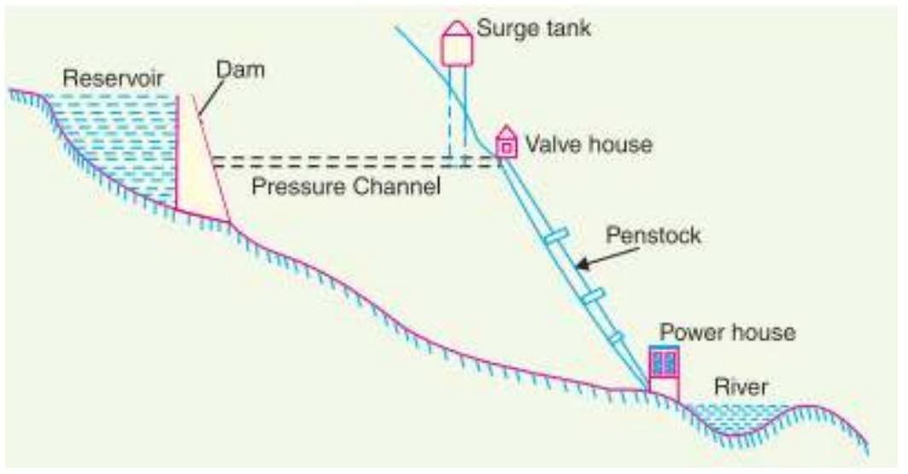Figure 3.1 schematic arrangement of Hydro-electric power station
A dam is constructed across the river or lake and a water catchment area collects at the back of the dam to form a reservoir. A pressure tunnel is taken off from the reservoir to direct water to the valve house at the start of the penstock. The valve house contains the main sluice valves & automatic isolating valves. The former controls the water flow to the power house and the latter cuts off supply of water when the penstock bursts. From the valve house, water is taken to water turbine through a huge steel pipe known as penstock. The water turbine converts hydraulic energy into mechanical energy. The turbine drives the alternator which converts mechanical energy into electrical energy.
A surge tank (open from top) is built just before the valve house and protects the penstock from bursting in case the turbine gates suddenly close due to electrical load being thrown off. When the gates close, there is a sudden stopping of water at the lower end of the penstock and consequently the penstock can burst like a paper log. The surge tank absorbs this pressure swing by increase in its level of water.
Components of hydro-electric plants
There are classified into two main categories: -
i) Hydraulic structures
ii) Water turbines
iii) Electrical equipment
Hydraulic structures in a hydro-electric power station include dam, spillways, headworks, surge tank, penstock and accessory works.
i) Dam; - this is a barrier which stores water and creates water head. Dams are built of concrete or stone masonry, earth or rock fill.
ii) Spillways: - during heavy rainfalls, a times the river flow exceeds the storage capacity of the reservoir. In order to discharge the surplus water from the reservoir, a spillway is used to get the surplus water down the stream.
iii) Headworks: - they are diversion structures at the head of water intake point. They are used for smooth controlling of water flow to the turbines.
iv) Surge tank: -
v) Penstock: - Penstocks are open or closed conduits which carry water to the
turbines. They are generally made of reinforced concrete or steel. water turbines used to convert the energy of falling into mechanical energy. They classified into; - impulse and reaction.
Impulse water turbines - used for high heads. In an impulse turbine, the entire pressure of water is converted into kinetic energy in a nozzle and the velocity of the jet drives the wheel.
Reaction water turbines; - used for low and medium heads. They include; -
- Francis turbines - used for low to medium heads. It consists of an outer ring of stationary guide blades fixed to the turbine casing and an inner ring of rotating blades forming the runner. The guide blades control the flow of water to the turbine.
- Kaplan turbines - is used for low heads and large quantities of water. It is similar to Francis turbine except that the runner of Kaplan turbine receives water axially.
Electrical equipment. They include the following; - alternators, transformers, circuit breakers and other switching and protective devices.
Advantages
i) It requires no fuel as water is used for the generation of electrical energy.
ii) It is quite neat and clean as no smoke or ash is produced.
iii) It requires very small running charges because water is the source of energy which is available free of cost.
iv) It is comparatively simple in construction and requires less maintenance.
v) It does not require a long starting time like a steam power station. In fact, such plants can be put into service instantly.
vi) It is robust and has a longer life.
vii) Such plants serve many purposes. In addition to the generation of electrical energy, they also help in irrigation and controlling floods.
viii) Although such plants require the attention of highly skilled persons at the time of construction, yet for operation, a few experienced persons may do the job well.
Disadvantages
i) It involves high capital cost due to construction of dam.
ii) There is uncertainty about the availability of huge amount of water due to dependence on weather conditions.
iii) Skilled and experienced hands are required to build the plant.
iv) It requires high cost of transmission lines as the plant is located in hilly areas which are quite away from the consumers.
Factors to consider when setting up hydro-electric power stations
i) Availability of water: - Since the primary requirement of a hydro-electric power station is the availability of huge quantity of water, such plants should be built at a place (e.g., river, canal).
ii) Storage of water: - The storage helps in equalizing the flow of water so that any excess quantity of water at a certain period of the year can be made available during times of very low flow in the river.
iii) Cost and type of land: - The land for the construction of the plant should be available at a reasonable price & the ground should be adequately withstand the weight of heavy equipment to be installed.
iv) Transportation facilities: - The site selected for a hydro-electric plant should be accessible by rail and road so that necessary equipment and machinery could be easily transported.
A diesel power station refers to a generating station in which diesel engine is used as the prime mover for the generation of electrical energy.
A diesel engine is used as the prime mover. The diesel burns inside the engine and the products of this combustion act as the "working fluid" to produce mechanical energy. The diesel engine drives the alternator which converts mechanical energy into electrical energy.
Due to the high cost of diesel, this power plants are used to produce small power.
Schematic arrangement of diesel power station
- Below is a diesel power station set up
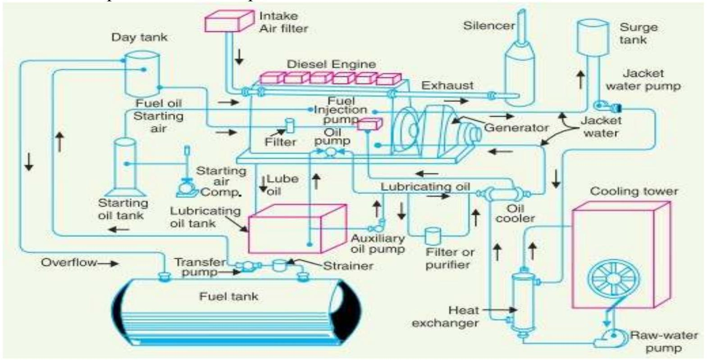Figure 3.2 schematic arrangement of Diesel power station
Components of a diesel power station
i) Fuel supply system: - It consists of storage tank, strainers, fuel transfer pump and allday fuel tank. The fuel oil is supplied at the plant site by rail or road. This oil is stored in the storage tank. From the storage tank, oil is pumped to smaller all-day tank at daily or short intervals. From this tank, fuel oil is passed through strainers to remove suspended impurities. The clean oil is injected into the engine by fuel injection pump.
ii) Air intake system: - This system supplies necessary air to the engine for fuel combustion. It consists of pipes for the supply of fresh air to the engine manifold. Filters are provided to remove dust particles from air which may act as abrasive in the engine cylinder.
iii) Exhaust system: -This system leads the engine exhaust gas outside the building and discharges it into atmosphere. A silencer is usually incorporated in the system to reduce the noise level.
iv) Cooling system. The heat released by the burning of fuel in the engine cylinder is partially converted into work. The remainder part of the heat passes through the cylinder walls, piston, rings etc. and may cause damage to the system. In order to keep the temperature of the engine parts within the safe operating limits, cooling is provided. The cooling system consists of a water source, pump and cooling towers. The pump circulates water through cylinder and head jacket. The water takes away
heat form the engine and itself becomes hot. The hot water is cooled by cooling towers and is recirculated for cooling
Advantages
i) The design and layout of the plant are quite simple.
ii) It occupies less space as the number and size of the auxiliaries is small.
iii) It can be located at any place.
iv) It can be started quickly and can pick up load in a short time.
v) There are no standby losses.
vi) It requires less quantity of water for cooling.
vii) The overall cost is much less than that of steam power station of the same capacity.
viii) The thermal efficiency of the plant is higher than that of a steam power station.
ix) It requires fewer operating staff.
Disadvantages
i) The plant has high running charges as the fuel (i.e., diesel) used is costly.
ii) The plant does not work satisfactorily under overload conditions for a longer period.
iii) The plant can only generate small power.
iv) The cost of lubrication is generally high.
v) The maintenance charges are generally high.
i) Oct-Nov 2018 KNEC QUESTION: - Draw a labelled block diagram of a diesel power station.
ii) Outline three factors to be considered when selecting the site for a diesel power station
NUCLEAR POWER STATION
A nuclear power station is a generating station in which nuclear energy is converted into electrical energy.
In kind of a power station, heavy elements such as Uranium ($U^{235}$) or Thorium ($T^{232}$) are subjected to nuclear fission* in a special apparatus known as a reactor. The heat energy thus released is utilized in raising steam at high temperature and pressure. The steam runs the steam turbine which converts steam energy into mechanical energy. The turbine drives the alternator which converts mechanical energy into electrical energy.
---The most important feature of a nuclear power station is that huge amount of electrical energy can be produced from a relatively small amount of nuclear fuel as compared to other conventional types of power stations.
Schematic arrangement of a nuclear power station
The schematic arrangement is as shown below; -
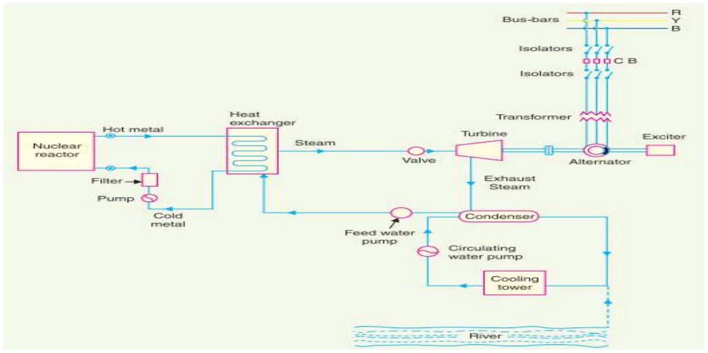Figure 3.3 schematic arrangement of Nuclear power plant
i) Nuclear reactor: - It is an apparatus in which nuclear fuel ($U^{235}$) is subjected to nuclear fission. It controls the chain reaction* that starts once the fission is done. If the chain reaction is not controlled, the result will be an explosion due to the fast increase in the energy released.
ii) Heat exchanger: - The coolant gives up heat to the heat exchanger which is utilized in raising the steam. After giving up heat, the coolant is again fed to the reactor.
iii) Steam turbine: - The steam produced in the heat exchanger is led to the steam turbine through a valve. After doing a useful work in the turbine, the steam is exhausted to condenser. The condenser condenses the steam which is fed to the heat exchanger through feed water pump.
iv) Alternator: - The steam turbine drives the alternator which converts mechanical energy into electrical energy. The output from the alternator is delivered to the busbars through transformer, circuit breakers and isolators
Factors to consider when setting up a nuclear power station
i) Availability of water: - As sufficient water is required for cooling purposes, therefore, the plant site should be located where ample quantity of water is available, e.g., across a river or by sea-side.
ii) Disposal of waste: - The waste produced by fission in a nuclear power station is generally radioactive which must be disposed-off properly to avoid health hazards. The waste should either be buried in a deep trench or disposed-off in sea quite away from the sea shore. Therefore, the site selected for such a plant should have adequate arrangement for the disposal of radioactive waste.
iii) Distance from populated areas: - The site selected for a nuclear power station should be quite away from the populated areas as there is a danger of presence of radioactivity in the atmosphere near the plant.
iv) Transportation facilities: - The site selected for a nuclear power station should have adequate facilities in order to transport the heavy equipment during erection and to facilitate the movement of the workers employed in the plant
Advantages
i) The amount of fuel required is quite small. Therefore, there is a considerable saving in
the cost of fuel transportation.
ii) A nuclear power plant requires less space as compared to any other type of the same size.
iii) It has low running charges as a small amount of fuel is used for producing bulk electrical energy.
iv) This type of plant is very economical for producing bulk electric power.
v) It can be located near the load centre's because it does not require large quantities of water and need not be near coal mines. Therefore, the cost of primary distribution is reduced.
vi) There are large deposits of nuclear fuels available all over the world. Therefore, such plants can ensure continued supply of electrical energy for thousands of years.
vii) It ensures reliability of operation.
Disadvantages
i) The fuel used is expensive and is difficult to recover.
ii) The capital cost on a nuclear plant is very high as compared to other types of plants.
iii) The erection and commissioning of the plant requires greater technical know-how.
iv) The fission by-products are generally radioactive and may cause a dangerous amount of radioactive pollution.
v) Maintenance charges are high due to lack of standardization.
vi) They are not suitable for varying loads as the reactor does not respond to load fluctuations efficiently.
Gas turbine power station
A gas turbine power station is a generating station which employs gas turbine as the prime mover for the generation of electrical energy. Air is used as the working fluid.
The air is compressed by the compressor and is led to the combustion chamber where heat is added to air, thus raising its temperature. Heat is added to the compressed air either by burning fuel in the chamber or by the use of air heaters. The hot and high-pressure air from the combustion chamber is then passed to the gas turbine where it expands and does the mechanical work. The gas turbine drives the alternator which converts mechanical energy into electrical energy.
Schematic arrangement of gas turbine power plant
Below is the schematic arrangement of a gas turbine power plant: -
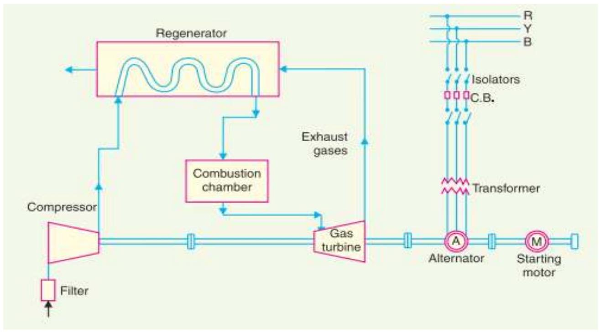Figure 3.4 schematic arrangement of a Gas turbine power plant
Components of a gas power station
i) Compressor: - used in the plant is generally of rotatory type. The air at atmospheric pressure is drawn by the compressor via the filter which removes the dust from air. The rotatory blades of the compressor push the air between stationary blades to raise its pressure. Thus, air at high pressure is available at the output of the compressor.
ii) A regenerator: - is a device which recovers heat from the exhaust gases of the turbine. The exhaust is passed through the regenerator before wasting to atmosphere. A regenerator consists of a nest of tubes contained in a shell.
iii) Combustion chamber: - The air at high pressure from the compressor is led to the combustion chamber via the regenerator. In the combustion chamber, heat* is added to the air by burning oil.
iv) Gas turbine: - The products of combustion consisting of a mixture of gases at high temperature and pressure are passed to the gas turbine. These gases in passing over the turbine blades expand and thus do the mechanical work.
Advantages
i) It is simple in design as compared to steam power station since no boilers and their auxiliaries are required.
ii) It is much smaller in size as compared to steam power station of the same capacity.
iii) The initial and operating costs are much lower than that of equivalent steam power station.
iv) It requires comparatively less water as no condenser is used.
v) The maintenance charges are quite small.
vi) Gas turbines are much simpler in construction and operation than steam turbines.
vii) It can be started quickly form cold conditions.
viii) There are no standby losses.
Disadvantages
i) There is a problem for starting the unit. It is because before starting the turbine, the compressor has to be operated for which power is required from some external source.
ii) Since a greater part of power developed by the turbine is used in driving the compressor, the net output is low.
iii) The overall efficiency of such plants is low (about 20%) because the exhaust gases from the turbine contain sufficient heat.
iv) The temperature of combustion chamber is quite high ($3000^{\circ}\mathrm{F}$) so that its life is comparatively reduced.
SOLAR ENERGY
Advantages of solar energy
- It is a renewable source of energy.
- It reduces the cost of electricity bills since it is less costly / expensive.
- It has low maintenance cost.
- It has a universe application since you can use by producing light and heat.
- It has developed the technology.
Disadvantages of solar energy
- The purchasing amount of solar system is high.
- Solar energy is a weather dependent hence it only works on a sunny season.
- Solar energy storage system is very expensive.
- It uses a lot of space for its implementation.
- It is a pollutant since it causes greenhouse effect.
GEOTHERMAL POWER PLANT
Geothermal power stations are similar to other steam turbine in that heat from a fuel source (in geothermal case, the Earth's core) is used to heat water or another working fluid. The working fluid is then used to turn a turbine of a generator, thereby producing electricity. The fluid is then cooled and returned to the heat source.
Dry steam power stations
Dry steam stations are the simplest and oldest design. This type of power station is not found very often, because it requires a resource that produces dry steam, but is the most efficient, with the simplest facilities. In these sites, there may be liquid water present in the reservoir, but no water is produced to the surface, only steam. Dry Steam Power directly uses geothermal steam of $150^{\circ}\mathrm{C}$ or greater to turn turbines. As the turbine rotates it powers a generator which then produces electricity and adds to the power field. Then, the steam is emitted to a condenser. Here the steam turns back into a liquid which then cools the water. After the water is cooled it flows down a pipe that conducts the condensate back into deep wells, where it can be reheated and produced again.
Flash steam power stations
Flash steam stations pull deep, high-pressure hot water into lower-pressure tanks and use the resulting flashed steam to drive turbines. They require fluid temperatures of at least $180^{\circ}\mathrm{C}$, usually more. This is the most common type of station in operation today. Flash steam plants use geothermal reservoirs of water with temperatures greater than $360^{\circ}\mathrm{F}$ ($182^{\circ}\mathrm{C}$). The hot water flows up through wells in the ground under its own pressure. As it flows upward, the pressure decreases and some of the hot water boils into steam. The steam is then separated from the water and used to power a turbine/generator. Any leftover water and condensed steam may be injected back into the reservoir, making this a potentially sustainable resource.
Binary cycle power stations
Binary cycle power stations are the most recent development, and can accept fluid temperatures as low as $57^{\circ}\mathrm{C}$. The moderately hot geothermal water is passed by a secondary fluid with a much lower boiling point than water. This causes the secondary fluid to flash vaporize, which then drives the turbines. This is the most common type of
geothermal electricity station being constructed today. Both Organic Rankine and Kalina cycles are used. The thermal efficiency of this type of station is typically about 10-13%.
Advantages
a) Comparatively ecologically clean. Unlike coal-fired power plants, geothermal ones use a renewable heat source with a constant supply. The amount of greenhouse gas from geothermal power plants is only 5% in the contrary with coal-fired power plants.
b) More energy. Geothermal power stations have great capacity - they can gravely help in meeting the demand for energy that grows every year, both in developed and developing countries.
c) Stable prices. Simple power plants depend on fuel, so the cost of their electricity is varying, based on the market price of fuel. Since geothermal power plants do not use fuel, they do not need to consider its cost, and they can offer their customers stable electricity costs.
d) Low operating costs. Geothermal installations require minimal maintenance compared to conventional power plants. As a result, they are reliable and cheap in operation.
e) Renewable and sustainable source. Geothermal energy will never end, unlike nonrenewable energy sources. As long as the earth supports our lives, geothermal energy will exist and geothermal power will work.
f) Permanent power supply. Unlike other renewable energy sources, geothermal one can provide a constant supply of energy - 24 hours a day, 7 days a week, 365 days a year, regardless of external factors. For example, solar panels can produce electricity only during the day, and wind turbines produce energy only with sufficient wind.
g) Small area. They occupy less space than their coal, oil and gas equivalents. Although they will reach far below the earth's surface, their area will be negligible.
h) Low noise work. There is a little noise in the production of geothermal energy. The main source of noise is the fans that are in the cooling systems. To reduce its level, engineers can install in the generator shops materials with high damping properties. It helps to reduce noise pollution.
i) Energy security. Using local geothermal resources, the need to supply sources from other countries reduces, which, in turn, lowers dependence on external influences and helps to increase our energy security.
Disadvantages
a) Ecological problem. High environmental consumption of fresh water can be a loss for the environment, which will ultimately lead to its deficit. Liquids extracted from the earth during drilling contain a large number of toxic chemicals (including arsenic and mercury), as well as greenhouse gases (such as hydrogen sulfide, carbon dioxide, methane, ammonia and radon). If they are incorrectly disposed or treated, they can get into the atmosphere or leak into groundwater and damage the environment and human health.
b) Geographical limits. Geothermal activity is the highest along the tectonic fault lines in the earth's crust. Exactly in these places the geothermal energy has the greatest potential. The drawback is that only few countries can use geothermal resources. Therefore, while having a look at their geographical peculiarities, such countries are the main producers of geothermal energy: the USA, Iceland, Kenya, Indonesia, the Philippines, Mexico
c) Seismic instability. There are reasons to believe that geothermal structures have caused underground shakings in different parts of the world. Despite the fact that seismic activity is often insignificant, it can lead to building damage, injuries and death.
d) Expensive construction. Geothermal power plants requires significant investments.
Although they have low operating costs, the cost of their construction may be much higher than coal, oil and gas plants. Much of these expenses concerns the exploration and drilling of geothermal energy resources. What is more, geothermal power plants require specially developed heating and cooling systems, as well as other equipment that can withstand high temperatures.
e) Possible exhaustion. Studies show that without careful management, geothermal tanks can be exhausted. In such cases, the geothermal power plant will become unnecessary until the tank is restored. The only inexhaustible option is to get geothermal energy directly from the magma, but this technology is still in the process of development. This option is worth investing at least because the magma will exist billions of years.
WIND POWER PLANT
This generating station employs wind turbine as the prime mover for the generation of electrical energy. Winds turns the propeller-like blades of the wind turbine around a rotor. These blades drive the wind turbine which converts wind energy into mechanical energy. The wind turbine (which is a set of gears) drives the alternator which converts mechanical energy into electrical energy.
Advantages
- Wind energy is a green energy source. Harnessing wind energy does not pollute the environment nearly as much as fossil fuels, coal and nuclear power do.
- As mentioned in the introduction of this article, the potential of wind power is absolutely incredible. Several independent research teams have reached the same conclusions: The worldwide potential of wind power is more than 400 TW (terawatts)
- Wind energy is a renewable source of energy. Wind is naturally occurring and there is no way we can empty the energy resources. Wind energy actually originates from the nuclear fusion processes that take place on the sun.
- Space efficient. The wind turbines can't be placed too close to each other, but the land inbetween can be used for other things.
- Although wind power only accounts for about $\mathbf{2.5\%}$ of total worldwide electricity production, the capacity is growing at an incredible rate of 25% per year (2010). This does not only contribute in the fight against global warming, but also helps lowering costs:
- Prices have decreased over $\mathbf{80\%}$ since 1980. Thanks to technological advancements and increased demand, prices are expected keep decreasing in the foreseeable future.
- It is generally true that operational costs tend to be low once the turbines first have been manufactured and erected. However, not every wind turbine is created equal some are more susceptible to maintenance than others.
Disadvantages
- Aesthetic impact: Many people are concerned with the visual effects that wind turbines have on the beautiful scenery of nature. They believe that giant wind turbines distract viewers from the beautiful surroundings.
- The initial cost is high.
- Wildlife: Wind turbines may be dangerous to flying animals. Many birds and bats have
been killed by flying into the rotors. Experts are now conducting research to learn more about the effects that wind turbines have on marine habitats.
- Remoteness of location: Although this may be an advantage (placing wind turbines in desolate areas, far away from people), it may also be a disadvantage. The cost of travel and maintenance on the turbines increases and is time consuming. Offshore wind turbines require boats and can be dangerous to manage.
- Noise: Some wind turbines tend to generate a lot of noise which can be unpleasant
- Safety at Sea: In the darkness/at night it may be difficult for incoming boats to see wind turbines thus leading to collisions.
ELECTRICAL POWER TRANSMISSION AND DISTRIBUTION SYSTEMS
What is electric supply system
It refers to the conveyance of electric power from a power station to the consumers' premises.
An electric supply system consists of three principal components which are: - the power station, the transmission lines and the distribution system. Electric power is produced at the power stations which are located at favorable places, generally quite away from the consumers. It is then transmitted over large distances to load centres with the help of conductors known as transmission lines. Finally, it is distributed to a large number of small and big consumers through a distribution network.
Typical A.C. Power Supply Scheme
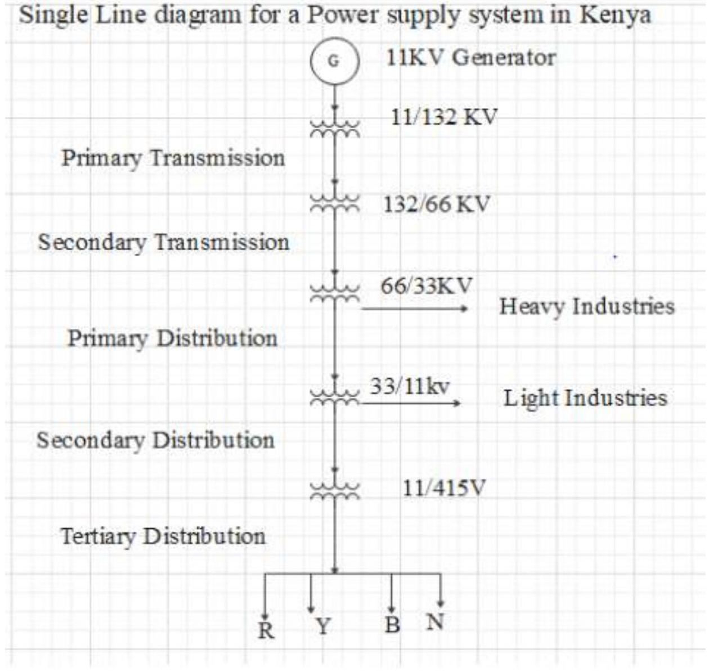Figure 3.5 Single line diagram for a power supply system in Kenya
TYPICALA.C. POWER SUPPLY SCHEME
A large network of conductors between the power station and the consumers can be broadly divided into two parts which are: transmission system and distribution system.
Each part is further sub-divided into two: primary transmission and secondary transmission and primary distribution and secondary distribution. As shown in the single line diagram
i) Generating station: In Fig 3.5, G.S. represents the generating station where electric power is produced by 3-phase alternators operating in parallel. The usual generation voltage is 11 kV . For economy purpose, during transmission,
the generated 11 kV is stepped up to 132 kV or more at the generating station with the help of 3-phase transformers. The transmission at high voltages has several advantages such as saving of conductor material and high transmission efficiency.
ii) Primary transmission: The electric power at 132 kV is transmitted by 3phase, 3-wire overhead system to the outskirts of the city. This forms the primary transmission.
iii) Secondary transmission: The primary transmission line terminates at the receiving station (RS) which usually lies at the outskirts of the city. At the receiving station, the voltage is reduced to 33 kV by step-down transformers. From this station, electric power is transmitted at 33 kV by 3 phase, 3-wire overhead system to various sub-stations (SS) located at the
strategic points in the city. This forms the secondary transmission.
iv) Primary distribution: The secondary transmission line terminates at the substation (SS) where voltage is reduced from 33 kV to 11 kV , 3-phase, 3-wire.
The 11 kV lines run along the
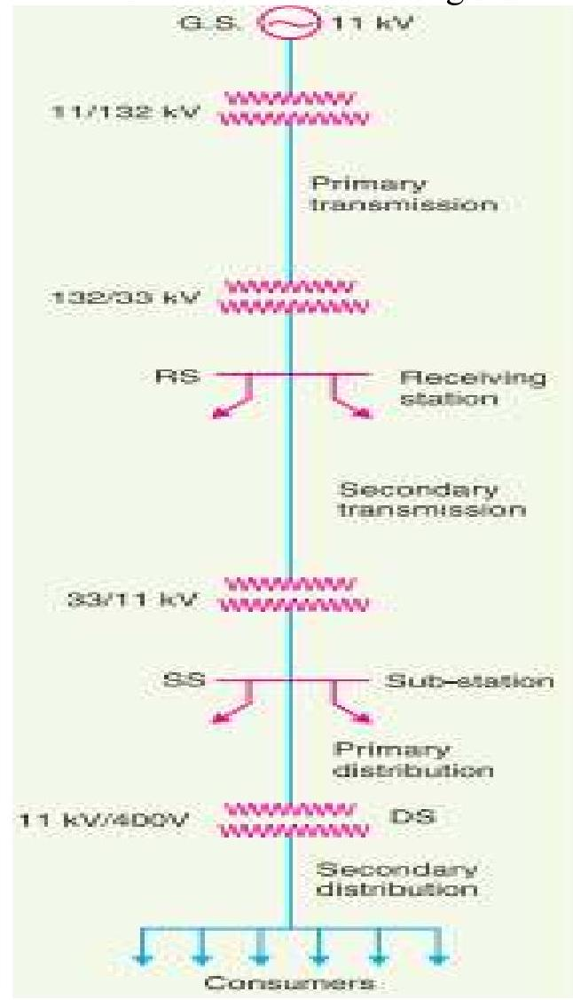Figure 3. 6 Typical a.c. power supply scheme
important road sides of the city. This forms the primary distribution. It may be noted that big consumers (having demand more than 50 kW ) are generally supplied power at 11 kV for further handling with their own substations.
v) Secondary distribution: The electric power from primary distribution line $(11 \mathrm{kV})$ is delivered to distribution sub-stations (DS). These sub-stations are located near the consumers' localities and step down the voltage to $400 \mathrm{~V}, 3$-phase, 4-wire for secondary distribution. The voltage between any
two phases is 400 V and between any phase and neutral is 230 V . The singlephase residential lighting load is connected between any one
phase and neutral, whereas 3-phase, 400 V motor load is connected across 3-phase lines directly.
$\mathrm{n}/\mathrm{b}$ the secondary distribution consists of; feeders, distributors & service mains.
Comparison of D.C. and A.C. Transmission
The electric power can be transmitted either by means of d.c. or a.c. Each system has its own merits and demerits. It is, therefore, desirable to discuss the technical advantages and disadvantages of the two systems for transmission of electric power.
1. D.C. transmission. For some years past, the transmission of electric power by d.c. has been receiving the active consideration of engineers due to its numerous advantages. Advantages; - The high voltage d.c. transmission has the following advantages over high voltage a.c. transmission:
i) It requires only two conductors as compared to three for a.c. transmission.
ii) There is no inductance, capacitance, phase displacement and surge problems in d.c. transmission.
iii) Due to the absence of inductance, the voltage drops in a d.c. transmission line is less than the a.c. line for the same load and sending end voltage. For this reason, a d.c. transmission line has better voltage regulation.
iv) There is no skin effect in a d.c. system. Therefore, entire cross-section of the line conductor is utilized.
v) For the same working voltage, the potential stress on the insulation is less in case of d.c. system than that in a.c. system. Therefore, a d.c. line requires less insulation.
vi) A d.c. line has less corona loss and reduced interference with communication circuits.
vii) The high voltage d.c. transmission is free from the dielectric losses, particularly in the case of cables.
viii) In d.c. transmission, there are no stability problems and synchronising difficulties.
Disadvantages
i) Electric power cannot be generated at high d.c. voltage due to commutation problems.
ii) The d.c. voltage cannot be stepped up for transmission of power at high voltages.
iii) The d.c. switches and circuit breakers have their own limitations.
2. A.C. transmission; - Now-a-days, electrical energy is almost exclusively generated, transmitted and distributed in the form of a.c.
Advantages
i) The power can be generated at high voltages.
ii) The maintenance of a.c. sub-stations is easy and cheaper.
iii) The a.c. voltage can be stepped up or stepped down by transformers with ease and efficiency. This permits to transmit power at high voltages and distribute it at safe potentials.
Disadvantages
i) An a.c. line requires more copper than a d.c. line.
ii) The construction of a.c. transmission line is more complicated than a d.c. transmission line.
iii) Due to skin effect in the a.c. system, the effective resistance of the line is increased.
iv) An a.c. line has capacitance. Therefore, there is a continuous loss of power due to charging current even when the line is open
Advantages of High Transmission voltage (high voltage transmission)
The transmission of electric power is carried at high voltages due to the following reasons: -
i) Reduces volume of conductor material. Consider the transmission of electric power by a three-phase line.
Total volume of conductor material required
It is clear from exp. (i) that for given values of P, 1, $\rho$ and W , the volume of conductor material required is inversely proportional to the square of transmission voltage and power factor. In other words, the greater the transmission voltage, the lesser is the conductor material required.
ii) Increases transmission efficiency
Assuming $J$ to be the current density of the conductor, then,
As $J, \rho$ and $l$ are constants, therefore, transmission efficiency increases when the line voltage is increased.
iii) Decreases percentage line drop
As $J, \rho$ and $l$ are constants, therefore, percentage line drop decreases when the transmission voltage increases.
Limitations of high transmission voltage
From the above discussion, it might appear advisable to use the highest possible voltage for transmission of power in a bid to save conductor material. However, it must be realized that high transmission voltage results in; -
- the increased cost of insulating the conductors,
- the increased cost of transformers, switchgear and other terminal apparatus.
Therefore, there is a limit to the higher transmission voltage which can be economically employed in a particular case. This limit is reached when the saving in cost of conductor material due to higher voltage is offset by the increased cost of insulation, transformer, switchgear etc. Hence, the choice of proper transmission voltage is essentially a question of economics.
Various systems of power transmission
As discussed earlier it is clear that for transmission of electric power, 3-phase, 3-wire a.c. system is universally adopted. However, other systems can also be used under special conditions for transmission which are: -
1. D.C. system
- D.C. Two-wire
- D.C. Two-wire with mid-point earthed
- D.C. Three-wire
2. Single-phase A.C. system
- Single-phase two-wire.
- Single-phase two-wire with mid-point earthed.
- Single-phase three-wire.
3. Two-phase A.C. system
- Two-phase four-wire.
- Two-phase three wire.
4. Three-phase A.C. system
- Three-phase three-wire.
- Three-phase four-wire.
D.C. system
D.C. Two-wire with one conductor earthed
In the 2-wire d.c. system, one is the outgoing or positive wire and the other is the return or negative wire as shown in Fig. 7.4. The load is connected between the two wires.
Max. voitage between conductors $=V_{n}$
Power to be transmitted $=P$
$\therefore \quad$ Load current, $I_{1}=P V_{m}$
If $R_{1}$ is the resistance of each line conductor, then,
$R_{1}=\rho \| a_{1}$
where $a_{1}$ is the area of X -section of the conductor.
Line losses, $\quad W=2l_{1}^{2} R_{1}=2\left(\frac{P}{V_{m}}\right)^{2} \rho \frac{l}{a_{1}}$
$\therefore \quad$ Area of X -section, $a_{1}=\frac{2 P^{2} \rho l}{W V_{m}^{2}}$
Volume of conductor material required
$=2 a_{1} l=2\left(\frac{2 P^{2} \rho I}{W V_{m}^{2}}\right) I=\frac{4 p^{2} \rho l^{2}}{W V_{n}^{2}}$
It is a usual practice to make this system as the basis for comparison with other systems. Therefore, volume of conductor material required in this system shall be taken as the basie quantity ie.
Two-wire d.c. system with mid-point earthed
The maximum voltage between any conductor and earth is $\mathrm{V}_{\mathrm{m}}$ so that maximum voltage between conductors is $2 \mathrm{~V}_{\mathrm{m}}$. as shown below; -
Let $a_{2}$ be the area of X-section of the conductor.
3. Three-wire d.c. system
In a 3-wire d.c. system, there are two outers and a middle or neutral wire which is earthed at the generator end as shown in Fig. 7.6. If the load is balanced, the current in the neutral wire is zero. Assuming balanced loads.
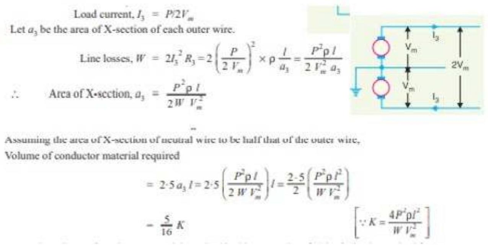4. Single phase 2-wire a.c. system with one conductor earthed
Fig. alongside shows a single phase 2 -wire a.c. system with one conductor earthed. The maximum voltage between conductors is $\mathrm{V}_{\mathrm{m}}$ so that r.m.s. value of voltage between them is $\frac{V_{m}}{\sqrt{2}}$. Assuming the load power factor to be $\cos \varphi$,
Let $a_{a}$ be the area of X -section of the conductor.
Hence, the volume of conductor material required in this system is $2 \cos 2 \varphi$ times that of 2 -wire d.c. system with the one conductor earthed.
5. Single phase 2-wire system with mid-point earthed
The fig. alongside shows a single phase a.c. system with mid-point earthed. The two wires possess equal and opposite voltages to earth (i.e., $\mathrm{V}_{\mathrm{m}}$ ). Therefore, the maximum voltage between the two wires is $2 \mathrm{~V}_{\mathrm{m}}$. the r.m.s value of voltage between conductors
is $=2 V_{m/ \sqrt{2}}=\sqrt{2}V_{m}$
Let $a_{5}$ be the area of X -section of the conductor.
Fig. 7.8
Volume of conductor material required
6. Single phase, 3-wire system: -
The single phase 3-wire system is identical in principle with 3 -wire d.c. system. The system consists of two outers and neutral wire taken from the mid-point of the phase winding as shown in Fig. 7.9. If the load is balanced, the current through the neutral wire is zero. Assuming balanced load,
Max. voltage between conductors $=2 V_{m}$
R.M.S.value of voltage between conductors $=2 V_{m} / \sqrt{2}=\sqrt{2} V_{m}$ If the p.f of the load is $\cos \phi$, then,
Let $a_{6}$ be the area of X -section of each outer conductor.
Assuming the area of X -section of neutral wire to be half that of the outer wire, Volume of conductor material required
Hence, the volume of conductor material required in this system is $5/8 \cos 2 \varphi$ times that required in a 2 -wire d.c. system with one conductor earthed.
7. Two phase, 4-wire a.c. system
The four wires are taken from the ends of the two-phase windings and the mid-points of the two windings are connected together. This system can be considered as two independent single-phase systems, each transmitting one half of the total power.
Max. voltage between outers A and B $=2 V_{m}$
R.M.S. value of voltage $=2 V_{m} / \sqrt{2}=\sqrt{2} V_{m}$
Power supplied per phase ( $1 . e_{\text {, }}$, by outers A and B ) $=P / 2$
Assuming p.f. of the load to be $\cos \phi$,
Let $a_{7}$ be the area of X-section of one conductor.
$\therefore$ Volume of conductor material required
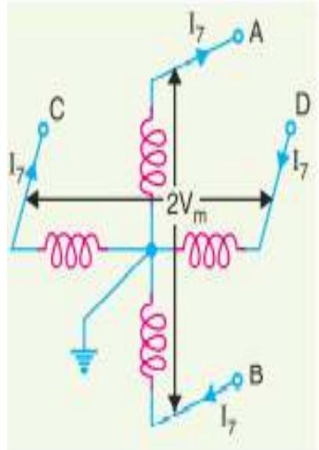8. Third phase, 3-wire system
The third or neutral wire is taken from the junction of two-phase windings whose voltages are in quadrature with each other. Obviously, each phase transmits one half of the total power. The R.M.S. voltage between outgoing conductor and neutral.
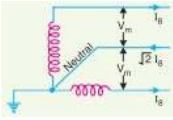9. 3-phase, 3-wire system
This system is almost universally adopted for transmission of electric power. The 3-phase, 3wire system may be star connected or delta connected. The neutral point N is earthed.
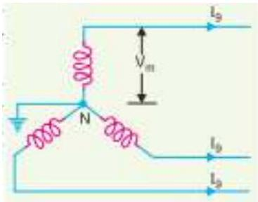10. 3-phase, 4-wire system
In this case, 4th or neutral wire is taken from the neutral point as shown in Fig. below..., The area of X-section of the neutral wire is generally one-half that of the line conductor. If the loads are balanced, then current through the neutral wire is zero. Assuming balanced loads and p.f. of the load as $\cos \varphi$
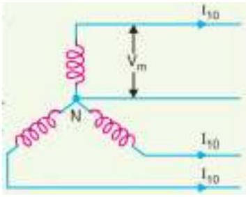KNEC QUESTIONS
1. Oct-Nov 2018 KNEC QUESTION: -
a) Draw a labelled block diagram of a diesel power station.
b) Outline three factors to be considered when selecting the site for a diesel power station
2. June/July 2013
a) Outline three advantages of a nuclear energy over thermal power generating stations. (3 marks)
b) With an aid of a labelled schematic diagram, explain the operations of the gas turbine power plant (7 marks)
c) Explain the functions of the hydraulic structures in a hydro-electric power plants (10 marks)
3. H
4.